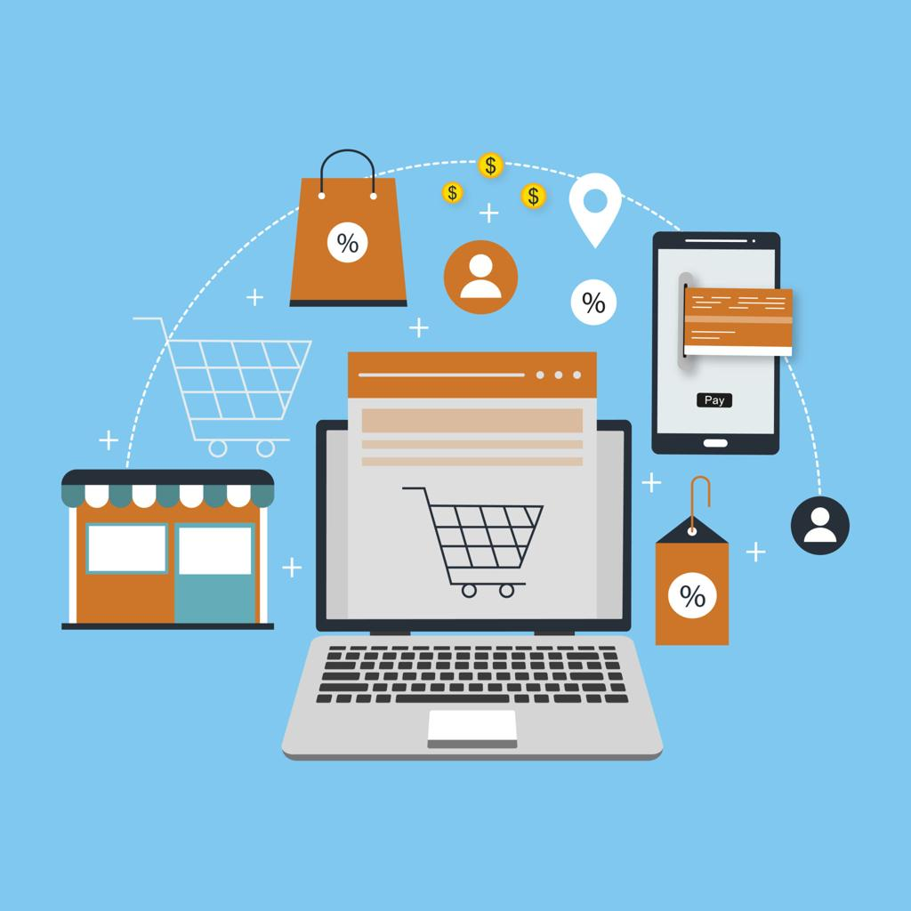

المقدمة (Introduction)
التجارة الإلكترونية ببساطة هي عملية بيع تتم خلال إحدى المواقع الإلكترونية أو مواقع السوشيال ميديا مثل الفيس بوك والإنستجرام. في عصرنا الحالي انتشر الوعي وانتشر عصر الرقمنة، هذا يسهل كثيرًا على الأفراد. فالتجارة هكذا إذا كنت تريد شيئًا ما يسهل طلبه عبر الإنترنت، فهذه عملية بيع تتم بين بائع ومشتري، ويأتي السؤال هنا: لماذا كثرت هذه التجارة في الأيام الحالية؟
الإجابة: توفر الكثير من الوقت، بالتالي لما تنزل تشتري من المحل فيه وقت هيضيع؛ الوقت ده كان ممكن تنجز فيه مهام أخرى، وكمان كجودة وخامة وخدمة توصيل أسرع.
ولا تقتصر التجارة الإلكترونية على عملية البيع والشراء فقط، كمان تشمل التسويق الإلكتروني وخدمة العملاء وإدارة الطلبات ومتابعة عمليات الشحن والتوصيل. أصبحت التجارة الإلكترونية وسيلة حديثة تساعد الأفراد والشركات على ممارسة الأنشطة التجارية بطريقة أكثر سهولة ومرونة.
أنواع التجارة الإلكترونية
1- التجارة بين الشركات
عملية تبادلية بين الشركات بيع وشراء سواء سلع أو منتجات، مثل شركة أجهزة كهربائية تبيع منتجاتها إلى شركة أخرى مقابل مال.
2- التجارة بين الشركة والفرد المستهلك
وهي عندما يأتي الفرد لشراء شيء ما فيتوجه إلى أحد المتاجر أو الشركة والمصنع المنتج، فيختار ما يريد شرائه، مثل فرد توجه لشراء ملابس من المتاجر الإلكترونية.
3- التجارة بين المستهلكين
عملية تبادلية شراء وبيع بين الأفراد المستهلكة، مثل شخص أراد شراء جهاز كمبيوتر والشخص الآخر بالفعل عرض جهازه على أحد المواقع فتتم العملية بينهم؛ هذه تجارة بينهم.
4- التجارة بين المستهلك والشركة
هي عملية يتم فيها عرض الفرد المستهلك خدماته على الشركة المصنعة أو المنتجة، ويعرض مشاريعه أو منتجاته للشركات بدوام جزئي أو كلي على حسب الاتفاق بينهما.
مميزات التجارة الإلكترونية
تتميز التجارة الإلكترونية بمميزات كثيرة جدًا جعلتها منتشرة في عصرنا الحالي دون أن نذهب إلى المتاجر لنشتري نحن بأنفسنا.
1- توفير الوقت والجهد
يستطيع المستهلك أن يشتري ما أراد، أي منتج، دون أن يذهب بنفسه لشرائه.
2- التسوق في أي وقت
تتيح المتاجر أن تتسوق في أي وقت في الليل وفي النهار وفي كل وقت أن أردت.
3- تنوع المنتجات
توفير المنتجات بكل أنواعها وبكل أسعارها في المتاجر الإلكترونية أمام المستهلك.
4- سهولة مقارنة الأسعار
يمكنك أنت كمستهلك أن تقارن أسعار المنتجات في المتاجر الأخرى وأن تختار ما تريد بنفسك والاختيار الأنسب.
5- الوصول إلى أسواق جديدة
تستطيع الشركة عرض منتجاتها لعملاء في مناطق ودول مختلفة.
6- زيادة فرص العمل للشباب
تساعد الشباب للعمل لأنها توفر فرص عمل في مجالات البرمجة والتوصيل والتسويق وإدارة المتاجر.
7- دعم ونمو الاقتصاد
تساهم في زيادة النشاط التجاري والصناعي وأيضًا الاستثمار والابتكار.
عيوب التجارة الإلكترونية
كما يوجد مميزات فيوجد أيضًا عيوب، من عيوبها:
1- عدم القدرة على معاينة المنتجات
لا يستطيع العميل معاينة المنتج أو لمسه أو شراءه، وقد تكتشف أن الصور المعروضة غير المنتج.
2- محاضر النصب والاحتيال
قد يتعرض بعض العملاء لعمليات النصب من خلال مواقع أو صفحات غير موثوقة.
3- مشاكل الدفع الإلكتروني
قد يحدث بعض المشاكل التي تواجه العملاء في الدفع أو تحويل الأموال، وهذا سيستم قد يحدث بعض الأعطال.
4- صعوبة إرجاع بعض المنتجات
هناك شركات لا يمكن أن تستبدل المنتج أو تسترجع المنتج أو حتى أخذ فلوسك، وقد تكون أنت كمشتري لا تعلم هذه القواعد.
5- الاعتماد الكلي والأساسي على الإنترنت
تحتاج إلى اتصال جيد بالإنترنت وجهاز مناسب.
صورة توضيحية للتجارة الإلكترونية

أمثلة على أشهر مواقع ومنصات التجارة الإلكترونية
أمثلة توضيحية لمنصات معروفة في مجال التجارة الإلكترونية:
1- Amazon
يعد من أشهر مواقع التسوق الإلكتروني في العالم، حيث يوفر مجموعة كبيرة من المنتجات مثل الأجهزة والملابس والكتب والأدوات المنزلية.
2- Jumia
من المنصات المعروفة في عدد من الدول الأفريقية، ومنها مصر، ويتيح للمستخدمين شراء العديد من المنتجات عبر الإنترنت.
3- AliExpress
منصة إلكترونية تتيح شراء منتجات متنوعة من بائعين مختلفين حول العالم.
4- Noon
منصة تسوق إلكتروني توفر منتجات متعددة تشمل الإلكترونيات والأزياء والأدوات المنزلية وغيرها.
جدول بأمثلة المنصات المذكورة
| المنصة | وصفها حسب البحث |
|---|---|
| Amazon | منتجات متنوعة مثل الأجهزة والملابس والكتب والأدوات المنزلية |
| Jumia | منصة معروفة في عدد من الدول الأفريقية ومنها مصر |
| AliExpress | منتجات متنوعة من بائعين مختلفين حول العالم |
| Noon | إلكترونيات وأزياء وأدوات منزلية وغيرها |
الخاتمة
في النهاية يمكن القول إن التجارة الإلكترونية أصبحت من أهم الوسائل الحديثة التي ساهمت في تغيير شكل النشاط التجاري في العالم حيث وفرت العديد من الفرص للأفراد والشركات وساعدت على تسهيل عمليات البيع والشراء وتوفير الوقت والجهد والتكاليف. وعلى الرغم من وجود بعض التحديات مثل الاحتيال الإلكتروني ومشكلات الدفع والشحن وحماية البيانات، فإن التطور التكنولوجي المستمر يساعد على إيجاد حلول لهذه المشكلات وتحسين مستوى الأمان والثقة في التعاملات الإلكترونية. لذلك أصبحت التجارة الإلكترونية مجالًا مهمًا في الحاضر والمستقبل ومن الضروري الاهتمام بتعلم مهاراتها واستخدامها بطريقة صحيحة للاستفادة من الفرص التي توفرها في مختلف المجالات.
المراجع والمصادر
- مجهودي الشخصي.
- متصفح جوجل العالمي.
- أداة كلود.
- موقع منظمة التجارة العالمية (WTO): https://www.wto.org/